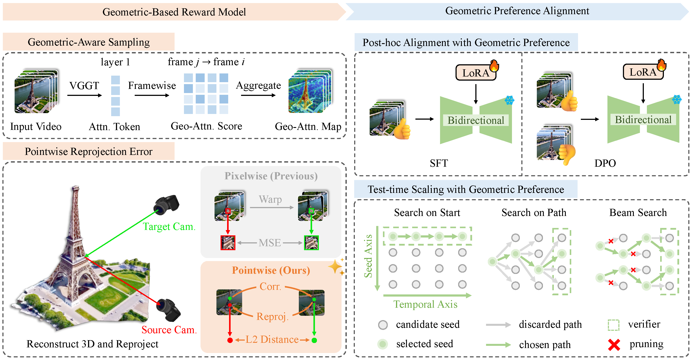

Abstract
Video diffusion models lack explicit geometric supervision during training, leading to inconsistency artifacts such as object deformation, spatial drift, and depth violations in generated videos. To address this limitation, we propose a geometry-based reward model that leverages pretrained geometric foundation models to evaluate multi-view consistency through cross-frame reprojection error. Unlike previous geometric metrics that measure inconsistency in pixel space, where pixel intensity may introduce additional noise, our approach conducts error computation in a pointwise fashion, yielding a more physically grounded and robust error metric. Furthermore, we introduce a geometry-aware sampling strategy that filters out low-texture and non-semantic regions, focusing evaluation on geometrically meaningful areas with reliable correspondences to improve robustness. We apply this reward model to align video diffusion models through two complementary pathways: post-training of a bidirectional model via SFT or Reinforcement Learning and inference-time optimization of a Causal Video Model (e.g., Streaming video generator) via test-time scaling with our reward as a path verifier. Experimental results validate the effectiveness of our design, demonstrating that our geometry-based reward provides superior robustness compared to other variants. By enabling efficient inference-time scaling, our method offers a practical solution for enhancing open-source video models without requiring extensive computational resources for retraining.
Method
Our VIGOR framework consists of two components: (a) Geometric-Based Reward Model: a geometry-aware sampling (GAS) module leverages the global attention of VGGT to identify salient patches, and a reward module computes cross-frame pointwise reprojection error; (b) Geometric Preference Alignment: the model is aligned either via SFT and DPO on a bidirectional model, or test-time scaling (TTS) with our reward as a path verifier on a causal model. For TTS, we introduce three complementary search strategies to efficiently explore the inference-time search space, including Search on Start (SoS), Search on Path (SoP), and Beam Search (BS or Top-K).

Video Results
We compare videos generated with and without VIGOR across diverse scenes. Without VIGOR, generated videos frequently exhibit geometric artifacts such as spatial drift, object deformation, depth violations, and abrupt structural changes. With VIGOR, these inconsistencies are substantially mitigated, yielding temporally stable and geometrically coherent video outputs.
Bad Geometry
Improved Geometry (Ours)
"Medium shot of a warmly lit hallway with hardwood floors. Camera dollies out. Camera dolly reveals a dark wooden console table adorned with two ornate vases ..."
W/O VIGOR, artifacts like spatial drift and object merging/splitting constantly occur;
W/ VIGOR, the geometry is significantly improved.
Bad Geometry
Improved Geometry (Ours)
"Close-up shot of a large blue-and-white floral canvas hanging on a wall. Camera pan reveals a narrow hallway with tiled floors, white doors, and a glimpse into a laundry room ..."
W/O VIGOR, abrupt room transitions cause visual inconsistencies；
W/ VIGOR, the transitions are smoother and more visually consistent.
Bad Geometry
Improved Geometry (Ours)
"Close-up shot of the stone base and bare winter trees in front of St. Paul's Cathedral. Camera tilts up. Camera tilt reveals the grand neoclassical facade, towering columns, and the majestic dome ..."
W/O VIGOR, object deformation and depth violation severely damage the geometric consistency;
W/ VIGOR, the object's 3D shape is stable and consistent throughout the video clip.
Bad Geometry
Improved Geometry (Ours)
"Overhead shot of a classic red British telephone box standing on a sunlit stone sidewalk. Behind it, a grand white stone building with ornate brickwork rises ..."
W/O VIGOR, the static object moves uncontrollably when it should stay still;
W/ VIGOR, the object remains stable and consistent.
Bad Geometry
Improved Geometry (Ours)
"Close-up shot of the Gateway Arch's gleaming steel curve against a clear blue sky. Camera pans right. Camera pan reveals the St. Louis skyline framed by the arch's silhouette ..."
W/O VIGOR, abrupt structural emergence and disappearance introduce implausible artifacts;
W/ VIGOR, such geometric inconsistencies are substantially mitigated.
Bad Geometry
Improved Geometry (Ours)
"A grand neoclassical triumphal arch rises under a clear blue sky, flanked by lush green trees and manicured hedges ... the camera follows a single person weaving through the crowd in a long tracking shot ..."
Our methods can generalize to dynamic scene where foreground objects are moving while background architecture remains stable and consistent.
3D Reconstruction Results
We further evaluate geometry quality by comparing 3D reconstructions from videos generated with and without VIGOR. The point clouds below are reconstructed from the respective video outputs and rendered as 360° rotations.
Bad Geometry
3D Reconstruction (Bad)
Improved Geometry (Ours)
3D Reconstruction (Ours)
"Close-up shot of a sleek black TV mounted on a textured stone wall. Camera pans Pan left. Camera pan reveals a cozy living room with hardwood floors, a plush armchair, and a white ottoman beside a stone fireplace ..."
VIGOR's geometry-based reward leads to a coherent sceen transition.
Bad Geometry
3D Reconstruction (Bad)
Improved Geometry (Ours)
3D Reconstruction (Ours)
"Medium shot of a modern bathroom with light gray walls. Camera dollies out. Camera dolly reveals a dark wood vanity with beige countertop, large mirror, framed artwork, and a corner jetted tub ..."
VIGOR's geometry-based reward leads to a stable and consistent geometry structure.
Bad Geometry
3D Reconstruction (Bad)
Improved Geometry (Ours)
3D Reconstruction (Ours)
"Close-up shot of the Eiffel Tower’s intricate iron lattice at its base. Camera tilts down. Camera tilt reveals the full grandeur of the iconic structure rising against a soft blue sky ..."
VIGOR's geometry-based reward leads to a physically plausible 3D reconstruction.
Bad Geometry
3D Reconstruction (Bad)
Improved Geometry (Ours)
3D Reconstruction (Ours)
"Overhead shot of the historic Blue Mosque in Istanbul, its twin minarets piercing a soft blue sky. The grand domed structure is framed by modern billboards and streetlights, with a metal fence and road in the foreground ..."
VIGOR's geometry-based reward mitigate sudden geometric changes (e.g. the minarets).
Bad Geometry
3D Reconstruction (Bad)
Improved Geometry (Ours)
3D Reconstruction (Ours)
"Close-up shot of rippling water near submerged rocks in the foreground. Camera tilts Tilt up. Camera tilt reveals the majestic red-orange Golden Gate Bridge stretching across the bay ..."
VIGOR's geometry-based reward avoid abrupt appearance/disappearance of geometric structures.
Bad Geometry
3D Reconstruction (Bad)
Improved Geometry (Ours)
3D Reconstruction (Ours)
"Wide shot of London’s Parliament and Big Ben under dramatic clouds. Camera dollies Dolly in revealing Gothic spires, the Union Jack fluttering, clock faces glowing, and Westminster Bridge’s arches framing the Thames ..."
VIGOR's geometry-based reward promotes stable geometric features (e.g. the number of clock towers).
BibTeX
@misc{yin2026vigorvideogeometryorientedreward,
title={VIGOR: VIdeo Geometry-Oriented Reward for Temporal Generative Alignment},
author={Tengjiao Yin and Jinglei Shi and Heng Guo and Xi Wang},
year={2026},
eprint={2603.16271},
archivePrefix={arXiv},
primaryClass={cs.CV},
url={https://arxiv.org/abs/2603.16271},
}